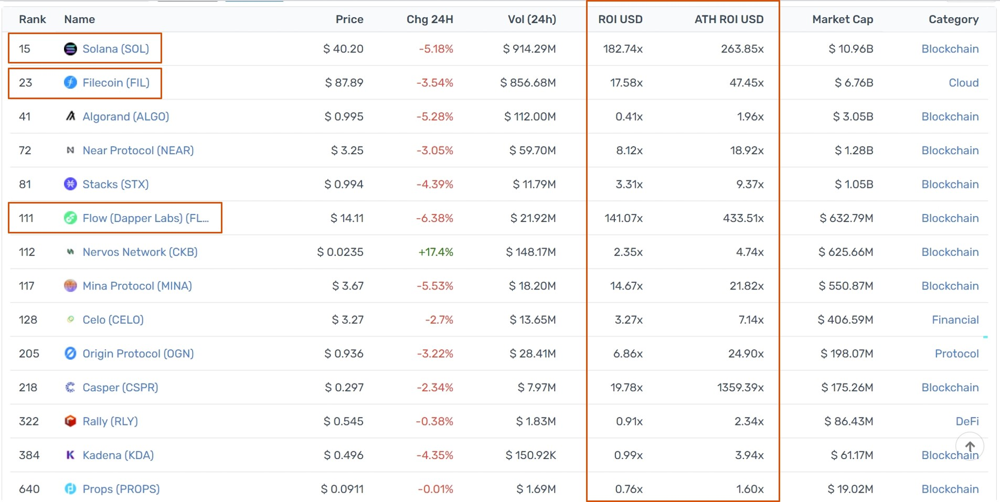
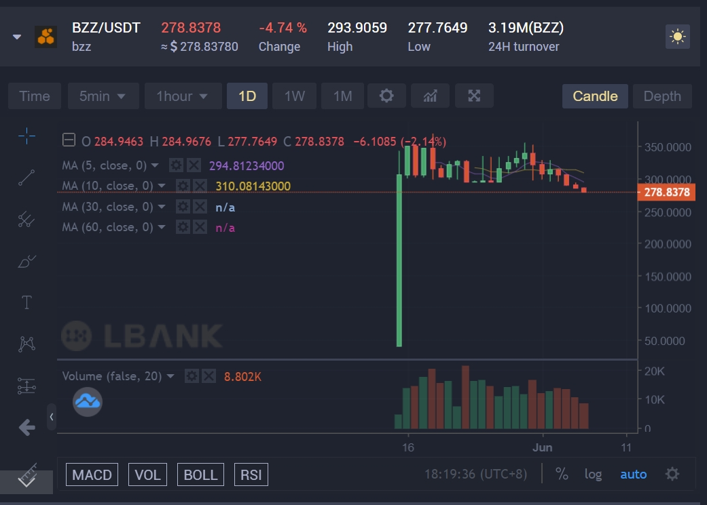
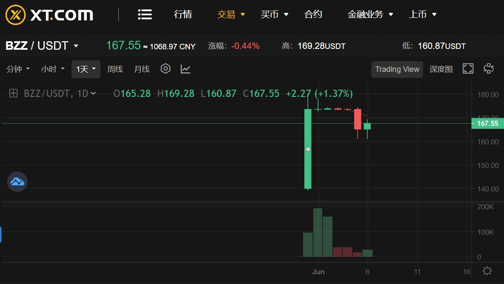
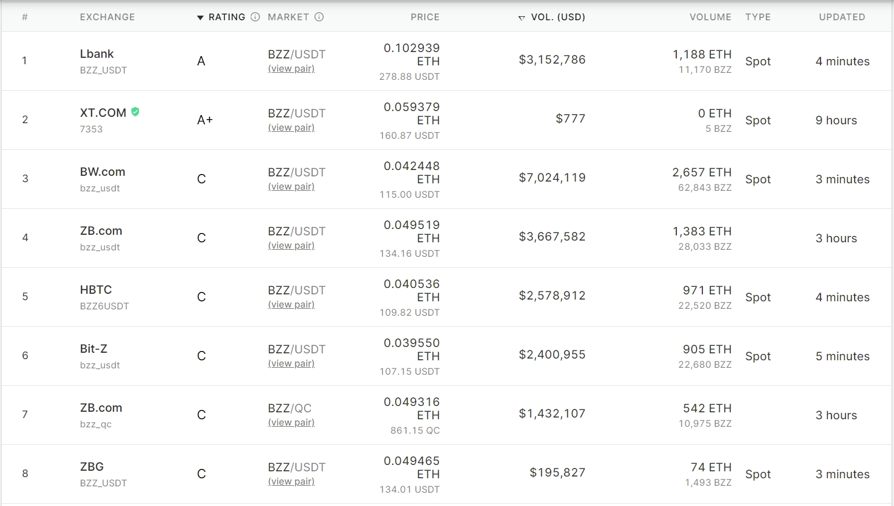
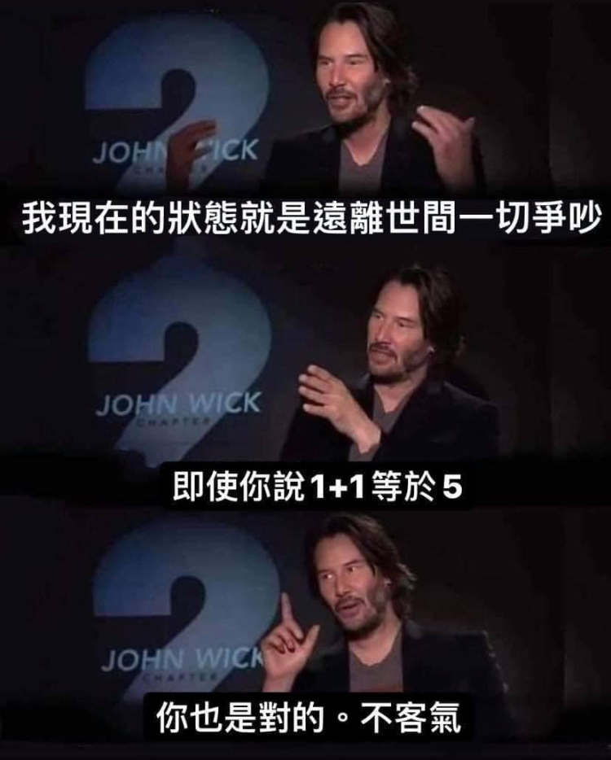

好消息
-
過去在CoinList上進行ICO的幣種整理👇  比較有名的是Solana公鏈、Filecoin(同樣為去中心化儲存項目)、和Flow(NBA Top Shot卡牌)。 你可以看到ROI USD，就是他們ICO的價格到現在的價格成長了多少，最神奇的大概是Flow的140倍(嗚嗚我沒參與到)，而ATH ROI代表他們ICO價格到歷史最高成長幾倍。 必須要說，有的項目並沒有很賺錢，而爆賺的這幾個項目共同點大概是"知名"，將觸手伸出了加密貨幣以外的圈子。 但我認為這樣的投資報酬率值得嘗試(記得高風險😉)
-
第一輪的私募價格為0.2美元，第二輪私募為0.25美元，我們能買到的公募價格為1.92美元，
目前有消息指稱，有人在場外交易以30美元購買。但是，此消息目前存疑！經過我深挖結果，目前BZZ在二線交易所價格如下(我這樣講會很過分嗎？)  LBank：05/15上線，目前278USDT。
 XT.com：05/31上線，目前167USDT。
這兩家交易所在CoinMarketCap和CoinGecko，排名大概介於20多~50多名。我想應該能稱呼為二線交易所。但我不為他們兩家安全性掛保證。
在各小的交易所價格如下👇 
壞消息
- 名氣不夠，這種真的技術底層的東西幾乎沒有炒作價值，不像是NFT卡牌，一般人非常好入手與理解。無法出圈，幾乎不可能爆富。
- CoinList排隊出了名難排隊，根據不可靠統計為3~5%。如果你要多帳號記得1.要用不同裝置註冊2.不同IP註冊(你朋友開Wifi給你)3. 不同身分註冊，當然。CoinList會鎖帳號的，IP一定要小心。
- Swarm並不是第一款去中心化儲存項目，這篇整理了他的前輩們(0x資訊2021/05/13)、(區塊客2021/04/12)。簡單來講，沒有誰特別出色到一定能贏到最後，也可以說是各有擅場。
- 在這篇整理的「募款歷史」中，你會發現投資的機構並不豪華。(但是你看看明星陣容Fei Protocol翻車🤣)
- 另外還有負面的三大問題待解，也應該要先看看。我自己認為商業模型讓人擔憂😢
我的想法
去中心化儲存是有需求的，我個人認為與現行DApp、DeFi串接最容易的項目能笑到最後，在這方面原生在以太坊上的Swarm或許有機會。
但是去中心化儲存，真的有需求嗎？有甚麼資料一定非得要去中心化儲存不可？ 中心化儲存的AWS、Google都好用太多了。唯一我想到一定要去中心化儲存的大概是維基解密…另一種就是你將你的NFT全套內容都放進去中心化儲存，實現真正的永久保存，沒有人可以刪除你的NFT，但…我們依然能放進中心化儲存就好？
在機會超多，雷也超多的加密貨幣圈裡，XiXi Huang的啞鈴式投資很棒。間單來說是將你的投資額分為極度保守+極度激進，ICO就是我用少量的錢找爆擊機會的。投入時間研究+少量金錢，如果你要說這和研究賭馬或六合彩一樣…我會說 
官方資料
THE BOOK of Swarm Github Swarm推特，目前1萬Fellower。 Discord群，目前30,000名成員。 Reddit群，目前869Members。有趣的是目前有人對CoinList不太滿意。
Swarm一詞可能源自於中本聰2010/12/11在論壇上的發文。「the swarm is headed towards us」。
第三方資料
- coinmarketcap
- 非小號
- 目前Coingecko還沒上BZZ
以太坊的去中心化儲存項目列表
目前唯一中文講解的影片币圈老韭菜，帶你用中文看一遍CoinList上的英文內容。但我個人看完覺得內容還是比較淺的，並沒有特別讓人拍手叫好的技術。
其他去中心化儲存
另一款去中心化儲存項目Arweave。文章很長，雖然內容是在講AR，但很適合你初步認識去中心化儲存世界。是獨立建另外一條鏈的。(待確認，也有人認為AR算是IPFS協議上的應用層)